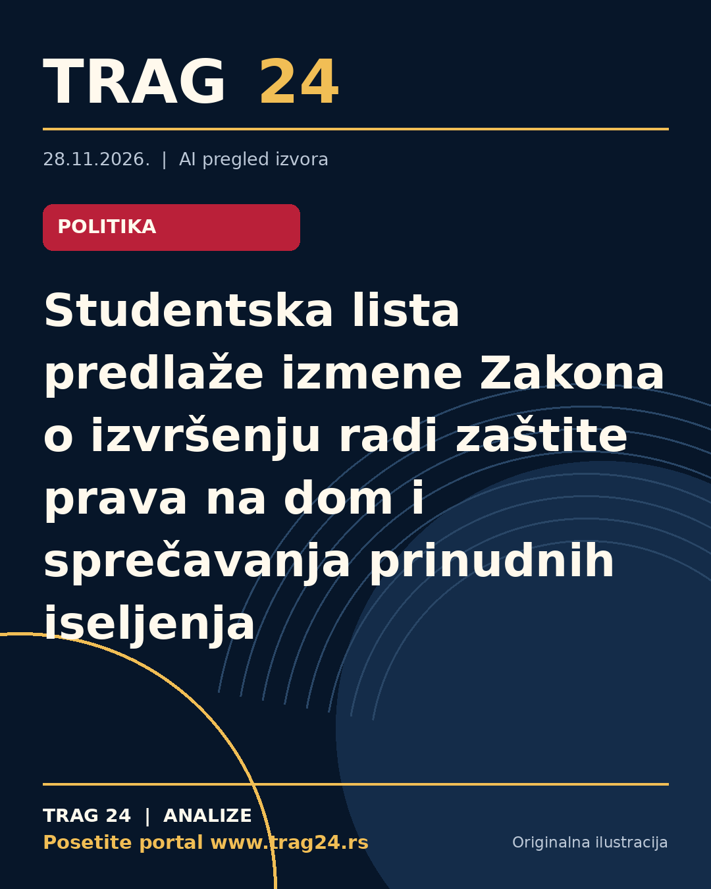

Studentska lista predlaže izmene Zakona o izvršenju radi zaštite prava na dom i sprečavanja prinudnih iseljenja

ŠTA SE DOGODILO
Studentska lista je najavila izmene Zakona o izvršenju i obezbeđenju sa ciljem jačanja zaštite prava na dom i sprečavanja prinudnih iseljenja. Kao konkretnu meru, pozvali su na odlaganje prinudnog iseljenja porodice Peruničić koje je zakazano za 30. novembar u Novom Beogradu.
HRONOLOGIJA
Izmene zakona su najavljene u kontekstu priprema za iseljenje porodice Peruničić iz jednog od nekadašnjih samačkih hotela 'Trudbenik', gde Institut za ekonomska istraživanja poseduje imovinu kupljenu još 2017. godine. Uprkos vlasničkom pravu koje institut ima, on se nije upisao u Katastar nepokretnosti, a Studentska lista smatra da porodica nije dobila adekvatnu pravnu zaštitu. Predlog zakonskih izmena usmeren je na uspostavljanje sistema izvršenja koji će biti humaniji i pravičniji, a koji će i dalje omogućavati naplatu dugova.
ŠTA NAVODE IZVORI
Prema informacijama sa sajta studenti.org, izmene Zakona o izvršenju treba da omoguće legalnu naplatu potraživanja, ali i zaštitu građana od gubitka jedine pravne zaštite u vidu doma, ističući da je dom pravo, a ne privilegija. Takođe, pozivaju javne izvršitelje da se uzdrže od sprovođenja prinudnih iseljenja dok se ne osiguraju pravna rešenja. Porodica Peruničić opisana je kao žrtva složenog vlasničkog problema, dok se u medijima ne navode detalji o daljim koracima državnih organa u ovom predmetu.
ŠTA JE POTVRĐENO
Potvrđeno je da je najavljeno iseljenje porodice Peruničić, kao i da je Studentska lista zvanično reagovala sa pozivom da se ono odloži. Takođe, jasno je da je institut vlasnik imovine, ali bez upisa u katastar. Planske izmene zakona još nisu usvojene, već su u fazi najave i najavljene inicijative. Ne postoje podaci o reakcijama drugih zvaničnih institucija ili stupanju izmjena u proceduru.
ŠTA NIJE POTVRĐENO
Nema potvrde da li će predložene izmene Zakona o izvršenju biti usvojene ili koja je konkretna procedura za to. Nije potvrđeno ni da li će se prinudna iseljenja u drugim slučajevima u budućnosti izbegavati na ovaj način. Takođe nije poznato da li su se javni izvršitelji ili druge relevantne institucije oglasile povodom apela Studentske liste ili izjavile nešto o konkretnom slučaju porodice Peruničić.
ŠTA OSTАJE OTVORENO: Ostaje otvoreno na koji način i u kom roku će izmene Zakona o izvršenju biti formalno predložene i razmotrene u nadležnim institucijama. Takođe nije poznato kako će se zaštita prava na dom implementirati u praksi i da li će se doneti dodatne pravne mere koje bi sistem izvršenja učinile pravednijim i humanijim. Ostaje neizvesno i kako će drugi akteri, uključujući izvršitelje, reagovati na nove zakonske okvire kada budu doneti.
Izvori
- https://www.euronews.rs/srbija/politika/254107/studentska-lista-najavila-izmene-zakona-o-izvrsenju/vest
- https://www.novosti.rs/vesti/politika/1675623/studentska-lista-zako-izvrsenju-obezbedjenju-zastita-doma
Ova analiza je pripremljena uz pomoć veštačke inteligencije na osnovu javno dostupnih izvora. Navodi izvora nisu nužno nezavisno potvrđeni.